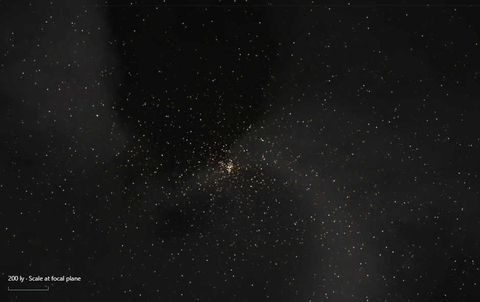

Computational physics · Scientific software
Cosmic Atlas
Cosmic Atlas is the star map of a personal game prototype: a procedurally generated universe that one camera can zoom through, from the cosmic web down to a single planet. Its matter comes from a model, not from observations. This case study asks how much of a gravity simulation a fast approximation can replace, and how I found out where it could not.

01
Problem
The map is budgeted for about 3.7 billion galaxies, far too many to store as coordinates. Detail has to be generated when the camera arrives, and it has to be the same detail on every visit. A gravity simulation produces convincing large-scale structure, with knots, filaments and voids, but it is too slow to run for each new region while the camera is moving.
So the question was whether a cheaper fitted model could stand in for the simulation, and how its errors would show up in the map. Most of what follows is about errors that the first numerical checks did not catch.
The work described here places galaxies. Stars and planets inside a galaxy come from a separate seeded generator that this case study does not evaluate.
02
My role
This is a personal project built with an AI coding agent. I set the goals and the numerical constraints, chose which experiment to run at each stage, playtested each build, and decided which builds were acceptable.
The Codex coding agent wrote the implementation and the audit scripts under those instructions, and the measurements on this page come from its recorded runs.
03
A reference worth approximating
The first experiment asked what structure gravity alone would produce in a local patch. It followed 64³ collisionless matter tracers in a periodic box 256 comoving megaparsecs wide, about 0.8 billion light-years. At each step, a particle-mesh solver deposited their mass on a 64³ grid, solved Poisson’s equation in Fourier space, and used the resulting force to advance the particles.
The run takes place in an expanding universe, and its clock is the expansion factor a: the size of the universe relative to today. At a = 1, distances between galaxies have their present values. At a = 0.1, every such distance was one tenth as large. The simulation works in comoving coordinates, which divide that overall stretch out. The box is therefore 256 Mpc wide in every panel below, and the only change visible is how gravity rearranges matter inside it.
Expansion matters to the result because it works against collapse: gravity pulls matter together while the background carries it apart, and the expansion rate sets how fast structure can grow. The run starts at a = 0.02, when matter is almost uniform, and advances to a = 1 in 160 logarithmically spaced steps. The expansion rate at each step comes from the Friedmann equation with an assumed parameter set (H0 = 67.4 km/s/Mpc, matter fraction 0.315), not a fit to observations.
On the development machine a complete run took about 52 seconds, including initial-spectrum preparation, checks and plots. That is practical offline. It is not practical for every new region during a camera move.

04
Fitting the final displacement
The atlas needs one thing from the simulation: where each tracer ends up. The first fitted model predicted that displacement directly. For each training seed, a reference solve and the predictor started from the same noise, tracer identities and continuous parent density field. Regularized least squares fitted eight vector terms describing displacement, tidal deformation and local collapse at several smoothing scales. That fit underestimated density contrast by about 25%, and two further density-gradient terms corrected part of the error.
The training set used 24 seeds across dense, typical and sparse parent environments. To compare like with like, both sides ran at 32³, a smaller setup than the 64³ run above. The 112-step reference took 1.5–2.2 seconds per block on the test machine. In an isolated Edge browser the fitted generator took about 185 ms on its first call and 143–179 ms afterwards, excluding drawing. That is roughly ten times faster.
On six held-out seeds, the correlation between smoothed log-density fields was 0.982–0.988. The fit recovered the coarse structure, yet it assigned 3.8–5.0 percentage points too much volume to voids below 30% of mean density. That bias matters in a map whose empty regions are as visible as its bright clusters.
05
Testing the fit at four scales
A fit tested in one box still had to work when the camera entered a much smaller patch. By this point a simpler generator with four tuned controls had replaced the eight-term fit. Its four values were fixed before the audit and were not refitted to the new seeds.
The audit used eight new seed families at four widths, from 4.8 down to 0.01875 billion light-years. Each smaller reference box received an environment cropped from its parent. The pass thresholds were set in advance: a smoothed log-density correlation of at least 0.94, and at least 95% of the short bridges between nearby reference peaks keeping their density support. Across the 32 cases the lowest correlation was 0.956, and 3,981 of 3,987 bridges were retained.

The audit passed, and I still rejected the build after playtesting it. Regions that had been round now appeared as boxes, and galaxies were sorted into groups that ran into one another.
The follow-up traced both symptoms to steps after the density field. The build displayed its internal computation blocks, 1.0–1.7 billion light-years on a side, where the earlier map had sampled spheres of radius 0.45 billion light-years. It had also replaced the earlier grouping rule, which followed density peaks and penalized low-density gaps, with fixed distance thresholds: 12 million light-years for a group core and 110 million for a cluster. Density along the path no longer decided membership, so groups grew large and overlapped.
The 32 cases had tested the fit against its own 32³ reference in square boxes. They exercised neither the grouping rule nor the block layout. A stricter check on the original 64³ regions then showed a second gap: the 32³ fit agreed with its own reference at about 0.97, but in some group-sized windows its correlation with the 64³ field fell to 0.61–0.84, because the coarser fit does not resolve dense cores.

07
Stripes from a periodic local solver
Unifying the input exposed another artifact. In one region I saw parallel layers that had not been there before. The agent reproduced them in the generated members, so they were not a display effect.
The cause was the local solve. Each small block computed its displacement with a fast Fourier transform, and an FFT treats its box as periodic: mass leaving one face re-enters through the opposite face, and a slow trend across the block becomes a step where the two ends meet. With a continuous parent field, most blocks carry such a trend. The contraction steps that follow then sharpen the response into layers locked to the block size.
To measure it, the positions of the final material were written in block units along each grid axis, and the magnitude of the mean of exp(2πix) was taken, keeping the largest of the three axes. A value near zero means no structure repeats with the block. In three test regions the measure was 14.5–19.3%. Replacing the periodic coarse field with a common long-range field over the whole sphere, plus a short-range correction delivered only from the interior of each solve box, brought it to 0.8–1.6%.
That version was slower and lost visible contrast, so a faster generator was kept, and with it a periodic solve. The measure rose again, to about 9% in the worst probe. The current build removes the wrap directly. It convolves over the real neighborhood with zero padding and a guard ring of real density, and material that leaves a box does not come back on the other side.

Opening the boundary was not enough alone. The old coefficients had been tuned with the periodic solver in place, so they were recalibrated against an open-boundary particle-mesh reference: two amplitudes, chosen from 60 preset candidates on two training seeds, then read on two held-out seeds across five environments.
On the held-out seeds, the periodic solve kept 68 of 95 reference bridges continuous and missed the void share by 4.7 percentage points. The open boundary with the old coefficients kept 78 bridges but missed the void share by 14.2 points. After recalibration, all 95 bridges stayed continuous and the void error was 3.0 points. Median bridge density, relative to the reference, went from 0.25 to 0.48 to 0.54.
The first recalibration, chosen on a combined score alone, left thin bridges broken in the typical region. I kept that failure on record and added a constraint: at least 95% of reference bridges had to stay continuous before the score was compared.
08
What the evidence changed
A fitted model can replace the per-region gravity solve for placing galaxies. In the paired test it reproduced the coarse density field at roughly a tenth of the cost, with a known excess of void volume.
Agreement on the density field did not validate the map. The build that passed every field threshold failed on a grouping rule and a block layout that the audit never exercised, and a playtest found it.
The later artifacts came from how the computation was divided, not from the fit. Separate fields per cluster left gaps and made clusters alike. A periodic solve per block printed the block size onto the matter. Each was fixed by sharing more of the field and then recalibrating, because coefficients tuned around an artifact stop being right when the artifact is removed.
09
Limitations
The universe is synthetic. The references are particle-mesh models of gravity alone at 24³ to 64³ tracers, which do not resolve galaxy cores and do not include gas, star formation or starlight. The four-scale audit compares the game’s model with its own reference at each width; it says nothing about the real universe at those scales.
The first fit was trained on three parent environments. It overestimates void volume, and six reference bridges were lost in the scale audit. The generator in the current build is a later and cheaper descendant of the audited ones, so the accuracy figures in sections 04 and 05 do not describe it. The held-out figures in section 07 do.
The current build is an open-boundary approximation over a finite neighborhood. It does not include tides from distant matter. Bridge density in the typical region is still only 0.20–0.31 of the reference, and the records do not show that every grid-aligned pattern is gone. Every test covers a handful of regions and seeds on one development machine, and none measured generation of the whole universe.
This interactive atlas uses precomputed data. If the viewer cannot load, the screenshot above shows the opening view.